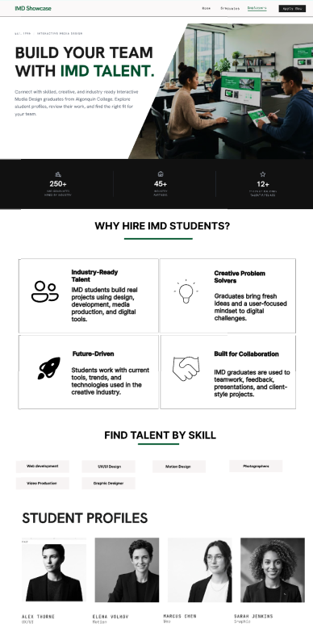
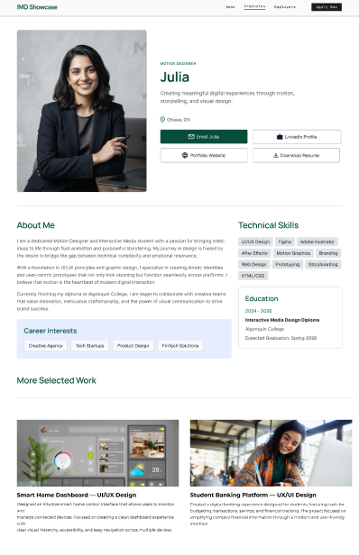
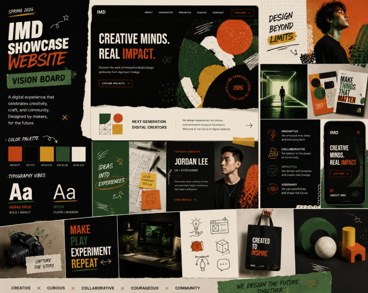

Project Three
IMD Showcase Website
The IMD Showcase Website was a group project created to present Interactive Media Design students, their work, and their profiles in a professional way. The website was designed for employers, future students, and people interested in the IMD program.

Process & Reflection
How I approached the project.
Problem
The project needed a clear website structure where visitors could explore student profiles, project work, employer information, and program-related content without feeling confused.
Solution
Our team planned a website with clear navigation, student profile sections, employer-focused pages, project showcases, and a consistent visual direction. I helped with UX design, wireframes, visual planning, and WordPress site-building support.
Reflection
This project helped me understand how important communication and structure are in a group website project. I learned how UX planning, wireframes, and clear navigation can make a large website easier for different audiences.
Skills Demonstrated
Tools, skills, and contribution.
Project Screenshots
Final visuals and process evidence.


